Tier 0 — Survival¶
Stone, sticks, and the next few hours. Solve water, fire, food, and sleep before they solve you.
13 quests · 10 on the win-path · 2 branches
You Woke Up Here¶
Conduvia¶
You woke up here with nothing. Happens to the best of us.
Stone, sticks, and the next few hours -- that's the starting inventory. The long-term plan is to build systems that build systems, but first: survive tonight.
Four things will get you if you ignore them:
- Water
- Fire
- Food
- Sleep
In that order, roughly. Try not to lose track of the first one while solving the fourth.
The rungs: Tier 0 (stone) → Tier 1 (camp) → Tier 2 (steam + steel) → Tier 3+ (electric + automation). The bottom is slow on purpose.
Tip · Open Settings → Controls to rebind anything.
Background
Controls¶
| Action | Key |
|---|---|
| Quest Log | ` (backtick) |
| Inventory | E |
| Interact / Pick up | F |
| Menu / Back | Backspace |
| Recipes for item | R (hover item) |
| Uses for item | U (hover item) |
| Drop one | Q |
| Map | M |
| Sprint | Left Shift |
| Crouch | Left Ctrl |
Backspace will almost always go back or close a panel.
How to gather things¶
Most materials come from walking up to something and pressing F.
- Plant fibers -- F on tall grass, ferns, or leafy shrubs
- River stones -- F on rocks near water or rocky ground
- Bark slabs / bark strips -- F on tree trunks (aim at the bark, not the canopy)
- Twigs / sticks -- F on fallen branches and forest floor debris
- Berries / nuts -- F on shrubs and tree drip lines
- Dry logs -- F on dead snags (the bare-trunk dead trees)
If nothing happens when you press F: try crouching (Left Ctrl) or getting closer.
Tip · Hover anything in your inventory and press U to see every recipe that uses it. R goes the other way -- "what recipes make this?"
Quest book¶
The left rail is the chapter list -- each chapter is one tier of progression. Nodes inside a chapter are quests; lines between them are prerequisites. Click any node to see what it needs and what it rewards.
Bookmarks (left rail of the crafting pane) let you pin favorite items and recipes you're actively tracking.
Crafting + items¶
Press R on any item to see recipes that produce it. Press U to see what it's used in. Press A to favorite it. Some recipes need a station -- the quest will say which one. Drop a station from your inventory to place it.
Death + respawn¶
Dying leaves a gravestone at the death site holding your inventory. A waypoint auto-marks it on the map so you can walk back. The grave doesn't expire and is open to anyone nearby.
Craft a bedroll and hold F on it to claim a spawn point. You'll respawn there instead of the default pad.
What kind of game is this?¶
Conduvia is a survival → automation → industry game. The loop: gather → craft → build → automate → repeat, at larger scale each time. The challenge isn't combat -- it's managing complexity without letting things fall apart.
Cordage (The First Multiplier)¶
Unlocks after: You Woke Up Here
Cordage¶
Rope is the duct tape of prehistory. It shows up in basically every recipe that isn't just "rock."
Get some. More than you think you need.
Tip · Plant fibers come from three places: (1) fern shrubs drop them directly when you press F, (2) willow shrubs at riverside drop them, OR (3) if neither grows nearby, ret bark: pick forest_bark_strip (F on a tree trunk -- aim at the bark, not the canopy), put 3 strips + 1 bark_bucket_water in the camp marker and craft plant_fibers. The water soaks the bast fiber loose from the woody cortex; the bucket comes back empty.
Tip · Rope itself is hand-crafted from 3 plant_fibers. R on rope in your inventory shows it.
Do this:
- retrieve Have at least 2 rope in your inventory.
yields: RO rope×2
- craft Craft rope from plant fibers. optional
rope×2
- craft Craft rope from plant fibers. optional
needs: PF plant fibers×10
plant fibers×10
yields: RO rope×2
rope×2
Background
Cordage isn't flashy -- it just keeps showing up.¶
The three obtain paths for plant fibers (fern, willow, bark-retting) mean you're never truly stuck for cordage as long as you have a forest to work with.
Get a Starter Pile + Mark a Spot¶
Unlocks after: Cordage (The First Multiplier)
Get a starter pile + mark a spot¶
Grab a bit of everything, then pick somewhere to work from.
The temptation early on is to do "just one more trip." Resist it. Grab a bunch now while you're already out.
Do this:
- retrieve Gather a basic starter pile: twigs, stone, fibers. optional
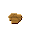
yields: FF rounded river stone×10 PF
rounded river stone×10 PF plant fibers×16 (or FI
plant fibers×16 (or FI fieldstone×10)
- craft Twist a quick rope tie (you'll use cordage constantly). optional
fieldstone×10)
- craft Twist a quick rope tie (you'll use cordage constantly). optional
needs: PF plant fibers×4
plant fibers×4
yields: RO rope×1
- craft Craft a simple camp marker. optional
rope×1
- craft Craft a simple camp marker. optional
needs: FFfine forest twigs×8 RR rounded river stone×2 RO
rounded river stone×2 RO rope×1
rope×1
yields: CMcamp marker (simple)×1
- retrieve Place your camp marker somewhere sensible. Not in water. Not on a cliff. (You could, I guess.)
yields: CMcamp marker (simple)×1
Background
Batches, not crumbs¶
Every trip should bring back more than you need right now. Early survival falls apart when every task becomes a separate emergency.
Get One Real Cutting Edge¶
Unlocks after: Get a Starter Pile + Mark a Spot
Get a cutting edge¶
Your hands are terrible scissors. Fix that.
A stone flake is the first tool that earns its name -- something that actually cuts on purpose.
Do this:
- retrieve Have a sharp stone flake.
yields: SF stone flake×1
- craft Craft a basic stone flake. optional
stone flake×1
- craft Craft a basic stone flake. optional
needs: RR rounded river stone×2
rounded river stone×2
yields: SF stone flake×1
stone flake×1
Background
Real tech¶
A flake is the sharp piece you get when you strike stone against stone the right way. Knapping is a genuine skill. In-game you just craft it -- appreciate the shortcut.
Hunting basics¶
A stone flake is also your first hunting tool. To kill an animal:
- Equip the stone flake (or any tool) from your hotbar.
- Walk up to an animal and left-click to strike.
- Keep swinging -- most animals take several hits. Predators (wolves, bears) fight back.
When an animal dies it leaves a carcass on the ground. Press F to pick it up. Take it to a butchering block (basic) and press F to break it down into meat, hide, and bones.
Start with passive animals: Rabbit, Bird, Deer, Cow, or Sheep won't attack you. Wolves and bears will. Start passive and upgrade your tools before picking fights with predators.
Tip · The hide you get from butchering is how you make rawhide_cord -- essential for the trapping quest and better tools.
Solve Water (For Now)¶
Unlocks after: Cordage (The First Multiplier), Get One Real Cutting Edge
Solve water (for now)¶
Find a water source, bring it back, make it safe.
The real problem isn't finding water -- it's the ten round trips after your camp is set up somewhere else. Make a bark bucket. Carrying water in cupped hands is technically possible but deeply inefficient.
Do this:
- retrieve Gather bark strips and a dry stick (for the bucket handle). optional
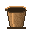 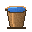
yields: CB curled bark strip×3 SD
curled bark strip×3 SD small dry sticks×1
- craft Craft a bark bucket (3 bark strips + 2 plant fibers + 1 stick, at camp marker). optional
small dry sticks×1
- craft Craft a bark bucket (3 bark strips + 2 plant fibers + 1 stick, at camp marker). optional
needs: CB curled bark strip×3 PF
curled bark strip×3 PF plant fibers×2 SD
plant fibers×2 SD small dry sticks×1
small dry sticks×1
yields: BB
yields: WF water-filled bark bucket×1
- craft Treat the water so it's safe to drink.
water-filled bark bucket×1
- craft Treat the water so it's safe to drink.
needs: WF water-filled bark bucket×1
water-filled bark bucket×1
yields: TW
Background
Carrying water is a container problem¶
Early camps don't fail because there's no water. They fail because water is a long walk, five times a day.
Boiling guidance¶
- Rolling boil for 1 minute at low altitude.
- Rolling boil for 3 minutes at high altitude.
If your container can't sit in flame (like a bark bucket), use hot-stone boiling.
Make Fire Repeatable¶
Unlocks after: Get One Real Cutting Edge, Cordage (The First Multiplier)
Make fire repeatable¶
Getting fire isn't the hard part. Keeping it alive is.
Three-layer stack -- each one depends on the last: - Tinder -- catches the spark (dry fiber tinder) - Kindling -- builds it into a flame (dry kindling sticks) - Fuel -- keeps it going long enough to matter (small dry sticks or logs)
To light the campfire: equip the fire_drill_kit, walk up to a placed campfire, and hold RMB. An animation plays; after a moment the fire catches. The kit wears with use -- craft a spare.
Tip · The fire ring (6 river stones at camp marker) is optional -- a campfire without a ring still works, it just doesn't look intentional.
Do this:
- retrieve Have a fire drill kit in your inventory.
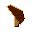 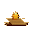 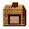 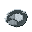 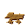 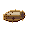
yields: FD
yields: SC
yields: SF
yields: DF
yields: SD small dry sticks×6
- craft Craft a basic fire drill kit (camp marker: 2 dry sticks + rope + stone flake). optional
small dry sticks×6
- craft Craft a basic fire drill kit (camp marker: 2 dry sticks + rope + stone flake). optional
needs: SD small dry sticks×2 RO
small dry sticks×2 RO rope×1 SF
rope×1 SF stone flake×1
stone flake×1
yields: FDfire drill kit×1
- craft Build a stone fire ring (camp marker: 6 river stones). optional
needs: RR rounded river stone×6
rounded river stone×6
yields: SFstone fire ring×1
- craft Build a survival campfire (camp marker: fire ring + tinder + kindling + logs). optional
needs: SFstone fire ring×1 DFdry fiber tinder×2 DKdry kindling sticks×4 SD
yields: SCsurvival campfire×1
Background
Controlled fire¶
You want: small fire, steady feed, easy to kill. If you don't have enough fuel, cooking and boil timers pause -- and that is annoying.
The fire_drill_kit is a usable tool: equip it, hold RMB near the campfire. It spins, uses tinder, and the fire catches.
Set Up a Night That Doesn't Wipe You¶
Unlocks after: Get Calories In
Set up a night that doesn't wreck you¶
The ground steals your body heat. Put something between you and it.
Make a straw bedroll, find somewhere reasonably sheltered, and put it down.
Tip · To sleep: place the bedroll, walk up to it, and press E to interact. You'll get a rest prompt. Sleeping restores stamina and skips to morning.
Tip · Hover bedroll_straw and press R to see the crafting recipe
(2× thatch bundle + plant fibres, at a camp marker).
Do this:
- retrieve Have or place a straw bedroll.
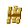
yields: SBstraw bedroll×1
- craft Craft a straw bedroll (2× thatch bundle + plant fibres, at camp marker). optional
needs: BO plant fibers×1
plant fibers×1
yields: SBstraw bedroll×1
- place Place your bedroll somewhere sheltered, then press E to sleep. optional
yields: SBstraw bedroll×1
Background
Bedding is layered¶
Grass, leaves, dry boughs -- piled thick. If the ground's cold, you'll feel it through almost anything thin.
Wind and wet can drop your temperature even above freezing. A windbreak and a roof matter as much as the bedding itself.
Tier 0 Stable¶
Unlocks after: Set Up a Night That Doesn't Wipe You
Tier 0 -- Stable¶
Not bad for someone who started with nothing.
You can now:
- get water without a trip every hour
- make fire on purpose
- keep food coming
- sleep without bleeding heat all night
Reward: First Camp Gift -- a starter kit to get Tier 1 moving. Includes a fire ring, bedroll, storage pits, waste midden, firewood rack, water level gauge, and rope. Nothing duplicates what you already have.
Next: turn that marked spot into an actual camp.
Rewards: FCFirst Camp Gift×1
Background
This is the line¶
The next chapter (Tier 1) assumes you can stay alive while you build things.
A Quieter Hunt¶
Unlocks after: Cordage (The First Multiplier)
A Quieter Hunt¶
Not everything is worth killing.
A lasso and a basket let you move small animals around -- relocate prey closer to camp, or just keep a few around for the mid-game when you need steady yields without burning through your hunting stock.
How it works:
- Craft a rope lasso (2 rope + 1 rawhide cord) at the hand-crafting grid.
- Craft a wicker basket (2 willow + 1 plant fibers).
- Equip the lasso. Walk within about 15 studs of a Rabbit, Bird, or Owl and left-click.
- The animal is packed into a basket in your inventory.
- Equip the occupied basket and left-click to release the animal wherever you want it.
Getting rawhide cord:
To craft the lasso you need rawhide_cord. Kill a passive animal (Rabbit, Deer, Cow) by equipping your stone flake and left-clicking it. Pick up the carcass with F, take it to a butchering block, and press F to get hide. Then hand-craft: hide + stone_flake → rawhide_cord.
Alternative -- snares:
Rather than chasing animals, set a passive snare. Craft a snare_simple (rope + 2 forest_twigs_fine, hand grid) and drop it near an animal trail. Small game will walk into it and you'll find a carcass when you come back.
Tip · Rope lasso is single-use -- it's consumed on a successful catch. Bring a few if you plan to move a group.
Tip · For medium animals (Cow, Sheep, Deer, Red Fox) you need a wooden cage (2 wood + 1 rope + 1 rawhide cord). Same mechanic.
Tip · Wolves and bears can't be lassooed. Craft a wolf lure (cooked meat + rope) or bear lure (2 safe berries + rope) instead -- place it and step back. The animal arrives on its own, then you deal with it however you like.
Do this:
- craft Craft a rope lasso.
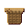 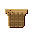 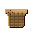
needs: RO rope×2 RC
rope×2 RC rawhide cord×1
rawhide cord×1
yields: RLrope lasso×1
- craft Craft a wicker basket (2 willow wands + 1 plant fibers, hand-crafted).
yields: WB
yields: WB
needs: RO rope×1 FFfine forest twigs×2
rope×1 FFfine forest twigs×2
yields: SSsimple snare×1
Rewards: RLrope lasso×2 WBwicker basket×1 SSsimple snare×2
Background
Why bother?¶
Lasso-and-basket is a soft version of ranching. You're not taming the animals -- they're still wild when you release them. But being able to relocate them means you can consolidate livestock near camp, seed a pond with birds, or just move a cow somewhere convenient before the mid-game farms come online.
The wooden cage opens up deer relocation, which feeds into leather supply chains before you get consistent hunting going.
Snare vs lasso¶
Snares are for food. Lassos are for relocation. Both require rawhide cord, but snares are lighter to set up and let you trap passively while you do other things. A few snares set before bed means meat in the morning without a hunt.
First Cast¶
Unlocks after: Get One Real Cutting Edge
First Cast¶
Still water holds food.
Craft a basic fishing rod at your camp marker and try your luck near a river or pond. It takes patience -- the float bobs, then dips. Press F when it dips.
How it works:
- Craft a fishing rod at the camp marker (2 dry sticks + 3 plant fibers + 1 stone knife flake).
- Stand within 14 studs of water. Right-click to cast.
- Wait for the float to dip -- then press F to reel in.
Tip · The bite window is short (~1.8 s). Watch the timing bar and don't wait too long.
Tip · Missed the window? Right-click to cast again. Rod has limited durability -- around 20 catches.
Do this:
- craft Craft a basic fishing rod.
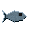
yields: BFbasic fishing rod×1
- retrieve Catch a raw fish.
yields: RF
Rewards: BFbasic fishing rod×1 RFraw fish×2
Background
Fishing is patience, not luck.¶
The float dips when the fish strikes. React within the window or the fish spits the hook.
A good riverside camp near the water means you can fish between other tasks without burning much time.
Get Calories In¶
Unlocks after: Make Fire Repeatable
Get some calories in¶
Go find food. Cook some of it.
Different shrubs and trees drop different fruits and nuts -- blueberry, blackberry, hawthorn, sea buckthorn, juniper, rowan; hazelnut, acorn, nut bundles. Any pair of the same kind sorts at hand into one safe-edible portion (R-key the berry to see the recipe). Cooked food beats raw food.
Do this:
- retrieve Gather a small amount of safe foods.
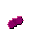 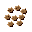 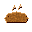
yields: SB
yields: SC
Background
Don't eat it all immediately¶
If you're always running at zero food, every other task gets harder.
Cook a small batch, eat one, keep the rest. Running a surplus sounds boring -- it isn't, once you see what it unlocks.
Tip · The world has an assortment of fruits and nuts, not just one generic kind. Pick whichever your area happens to grow -- they all funnel into the same food_berries_safe / food_nuts_safe output.
Dirt Under Your Nails¶
Unlocks after: Get Calories In
Dirt Under Your Nails¶
Foraging works today. Next week it won't.
Gathering seeds now means you hit Tier 0.5 with something ready to plant.
Getting seeds:
Flowers and spent grass heads drop forest_seed_mix_dry when you press F. Take 3 handfuls to your camp marker and sort them into crop seeds (recipe: "sort seed mix" in the camp marker's crafting list). This gives flax, turnip, AND carrot seeds in one pass.
The full farming loop (needs hoe, available in Tier 0.5):
- Equip a hoe and swing it at open ground (grass or dirt) to till a patch.
- Walk up to the tilled soil with seeds in your inventory and press F to plant.
- Wait for the sprout to change colour -- it's ripe when it glows bright.
- Press F to harvest: you get crop + a seed back, so the supply sustains itself.
Tip · Turnip is the staple starter crop -- fast and hardy. Carrot is a bit slower but useful for variety.
Do this:
- retrieve Have carrot seeds. Sort them at your camp marker (3 seed mix → all three seed types) or via the hand grid (2 seed mix + plant fibers → carrot seed).
yields: CS carrot seed×2
- retrieve Also have some turnip seeds for the staple crop. optional
carrot seed×2
- retrieve Also have some turnip seeds for the staple crop. optional
yields: TS turnip seed×2
turnip seed×2
Rewards: CS carrot seed×4 TS
carrot seed×4 TS turnip seed×4
turnip seed×4
Background
Why bother with farming?¶
Hunting and foraging are unreliable and biome-dependent. Farming gives you a controlled, renewable food loop that works regardless of how far you've explored.
One tilled row of turnips takes less time per calorie than any hunting route.
Starting the seed collection now means you hit Tier 0.5 with something to plant immediately rather than having to backtrack for seeds after you've built the hoe.
Keep What You Find¶
Unlocks after: Set Up a Night That Doesn't Wipe You
Keep What You Find¶
Your pack fills fast. A bark storage crate holds 27 stacks and keeps its contents between sessions -- everything you place in it stays there when you log off.
To craft one, open your camp marker and queue a bark storage crate: - 8 × forest bark strip - 2 × branch bundle - 2 × rope
The camp marker shows a progress bar while it builds (~50 s). When done, place the crate near your bedroll.
To use it, left-click the crate to open it. Shift+click moves items between your inventory and the crate instantly.
Do this:
- craft Queue 'bark storage crate' at the camp marker (8 bark strips + 2 branch bundles + 2 rope).
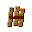 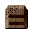
needs: CB curled bark strip×8 BB
curled bark strip×8 BB rope×2
rope×2
yields: BS
yields: BSbark storage crate×1
Rewards: CB curled bark strip×6 RO
curled bark strip×6 RO rope×2
rope×2